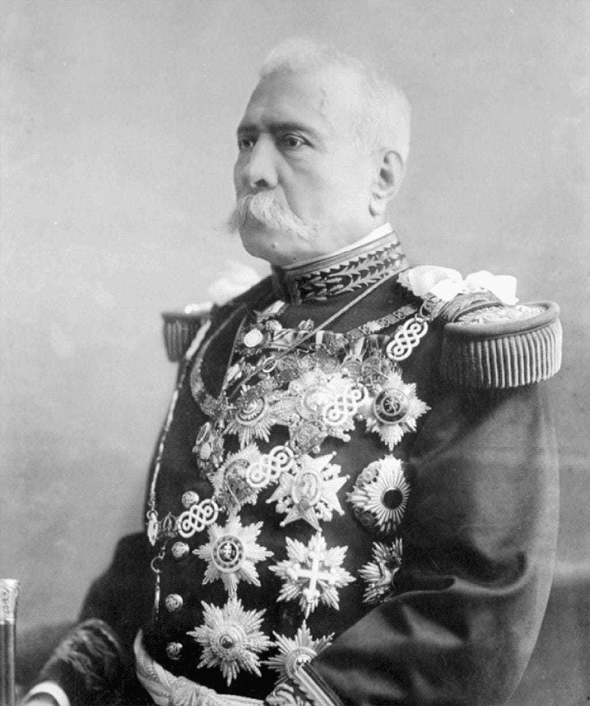

01 · El personaje

¿Quién fue Porfirio Díaz?
Fue un militar y político que gobernó México durante gran parte de 1876 a 1911. Su gobierno se caracterizó por la modernización del país y la falta de democracia.
Modernización, desigualdad y el camino hacia la Revolución mexicana.
El Porfiriato fue un periodo de la historia de México en el que Porfirio Díaz mantuvo una gran influencia en el gobierno. El país tuvo cambios importantes en su economía e infraestructura, pero también vivió desigualdad social y falta de democracia.
Fue un militar y político que gobernó México durante gran parte de 1876 a 1911. Su gobierno se caracterizó por la modernización del país y la falta de democracia.

Durante su gobierno crecieron los ferrocarriles, la electricidad, los teléfonos y las industrias, impulsando el comercio y el transporte.

Muchos campesinos y obreros sufrían bajos salarios, largas jornadas laborales y malas condiciones de trabajo.

En 1910 comenzó la Revolución mexicana, impulsada por el descontento social y la oposición a la reelección de Porfirio Díaz.

La cultura recibió influencia francesa y europea. Se construyeron edificios importantes y se impulsaron las artes y la educación.
En 1906 y 1907, los trabajadores realizaron huelgas para exigir mejores salarios y condiciones laborales. Ambas fueron reprimidas.
Mientras México avanzaba en infraestructura e industria, gran parte de la población seguía enfrentando pobreza, explotación y pocas oportunidades para participar en la política.